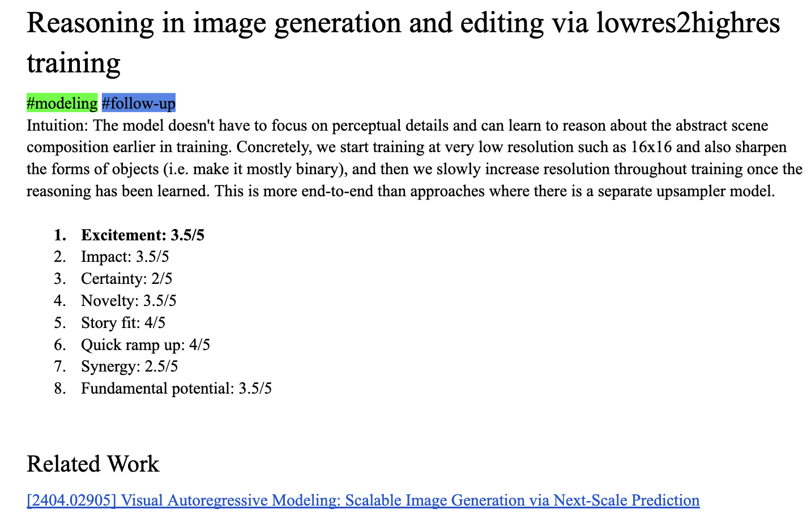

June 2026 — Appendix to my PhD thesis
A word-by-word excerpt from Appendix A of my PhD thesis. It discusses: applying, the slumps, the pivots, lessons learned, and the original statement of purpose.
Around the middle of my PhD, I decided to include a Behind the Scenes section in the Appendix of the AURORA paper. Since then, including such a section has become a tradition for all my first-author papers, and I am happy to see collaborators pick up the habit as well. These sections in some way or another tell the story behind the paper, the ups and downs, the initial brainstorming and the real motivation of the authors. The hope is that this humanizes the field and helps young researchers see that behind the polished work is a lot of confusion, uncertainty and us humans.
This is a special Behind the Scenes section as it spans so much more than a single paper. While I will talk less about the scientific details of each paper, I will follow a similar structure (just one abstraction level higher): 1) What drove me to start this project (i.e., the project of spending five years on a PhD) and what were the initial expectations?; 2) What did I end up working on, with whom did I work and how did my ideas develop over the years?; 3) Finally, general lessons learned and what comes next academically.
As an undergrad I found my PhD direction because I was unhappy with the state of the NLP field in 2020. But let’s start at the beginning: After dabbling for one semester in a pure math major, I got my BSc in computational linguistics at LMU Munich. It was an easy workload, allowing me to work on the side at a computer vision startup, start a philosophy society at university and to get early research experience in NLP. My first research experiences during undergrad were quite coincidental: I did not know that Hinrich Schuetze (who supervised my bachelor thesis) was a “big name” in the field. I simply chose the local university at the time and a major that sounded multi-disciplinary. And nobody could anticipate that NLP would soon become the most trendy topic as the birthplace of LLMs.1
I was not really blown away by the topics in NLP research yet but I think deep-down I knew that research in general would fit me very well; and I was naive and driven: I really wanted to get papers out and a chat with a visiting PhD student (Denis Peskoff) convinced me that it would be exciting to apply directly for a PhD in North America. That sounded much more exciting than doing an MSc in Europe. So I went to the two main professors in our department and asked them if they could supervise me with the goal of publication. They both matched me with some senior PhD students in their lab and somehow it all worked out: Two shared first-author papers got into smaller NLP venues.
But as those papers were wrapping up in early summer 2020, I had not found a topic yet that felt worth it to spend five whole years on: Philosophically, just working on narrow NLP tasks such as translation did not feel like anything resembling the embodied intelligence and cognition we humans have. But if I remember correctly, I was also too inexperienced in the literature to put this disillusionment into words. Instead I had to stumble upon the paper Experience Grounds Language (Bisk et al., 2020) on Twitter to find my direction: Language grounding. Each word in this paper resonated so much with me! After less than a page, I kind of knew I had found something worth it to dedicate five years of my life to. It was philosophical (Where do words get their meaning from?), it was interdisciplinary (spanning NLP, computer vision, robotics, cognitive science) and it also felt timely when language models were taking off but it was unclear if they could reach “genuine understanding”.
Now I was in PhD-application mode, making spreadsheets that ranked different potential professors and locations. Many of the potential supervisors I reached out to and eventually applied to were from the long author list of that paper, and almost all of them were working on language grounding or on some form of multimodal NLP. I attended my first conferences (virtual due to COVID). Twitter and cold emails played a big role, too. In the end I applied to around 15 places, all in North America except Edinburgh.
Feel free to also read some of the blog posts I wrote at the time: What made me do a PhD far away? and Attending my first conference! ACL 2020 from an undergrad’s perspective and ELI5: Language Grounding.
In the end I chose to do my PhD at Mila and McGill University in Montreal. There are too many factors going into such a decision to list them all here. A big factor was definitely that both Mila and the city of Montreal have a great vibe. My visit days were all virtual due to COVID and I would often instead watch YouTube videos of the respective cities to imagine a potential life there. My PI Siva also made it easy to commit to Mila and put effort into recruiting me.
It is interesting how almost nobody ends up working on what they envisioned in their Statement of Purpose. I had big ambitions of working explicitly on the Big Philosophical Questions around language grounding, in all its facets: embodiment, interaction with other agents or humans, video understanding, grounding in time, comparisons to language acquisition in humans. In my Statement of Purpose, I expressed interest to work on “modeling how humans acquire language”, emergent communication, temporal commonsense (i.e., grounding in the passing of time), video understanding, developing benchmarks for grounded tasks like embodied navigation or instruction following, and even developing simulation environments for multi-player games to study the social interaction aspect of grounding. Of course, I ended up mostly working on other things.
The PhD started four months “early” with an internship in Siva’s lab and naturally my first internship project was smaller-scoped and less philosophically ambitious, yet still very fun: Siva had an interest in minimally different pairs of images, either as a hard task or as a training signal for compositionality. I eventually proposed videos to find minimally different pairs and the human annotation protocol; that’s how the ImageCoDe paper came about. In retrospect I would have done things very differently, starting with the title: the one we chose does not really tell you any of the unique contributions of ImageCoDe! Even a boring highly descriptive title like “Gamified Describing of Minimal Visual Differences from Nearby Video Frames” would have been better. I also dreamed of having even more than just sets of 10 minimally different images, why not more. More is always better right? In retrospect, choosing less than 10 would have been better probably. But the paper was a success and slowly caught some people’s attention. It also helped that Siva insists that his students put in effort beyond just submitting the paper to a conference. In our case that meant setting up a leaderboard for the task or making a nice demo (on which I spent more than a week, in pre-Claude days). Since this was primarily a dataset contribution, it felt straightforward and gave me early confidence as I was just starting the PhD. While one should take risks in a PhD, I would recommend to try to have smaller successes early on. Later PhD projects can be more open-ended and confusing. This is especially true when the student comes directly out of undergrad and I think this was also part of Siva’s thinking.
In the first months of the PhD I was still brainstorming big ideas around grounding and would even have liked to work on some embodied systems. One of the craziest serious ideas I was sketching out at the time involved a longitudinal study over months where humans would be instructed to teach an embodied system language. They would take the little device through their daily life, point at things, use more complex language eventually, the system could actively ask for more information via pointing to get moved closer to something by the teaching human. This project would have involved all aspects of AI and I wanted to do it all: life-long learning, RL, robotics, video understanding, NLP, Human-Computer-Interaction. During that early excitement around grounding I also started the “Language Grounding Reading Group” that would run for three years at Mila and it would be the start of many deep discussions and friendships with, e.g., Oscar Manas and Rabiul Awal.
Then came the longest slump of my PhD, some form of mini-burnout and existential crisis. The crisis started with me questioning if I was doing any good for society by advancing AI models, and once I had made peace with some of that guilt, I questioned the whole thing: Am I doing a PhD for the right reasons (curiosity, helping science/society, fun), or because my self-worth is tied to being smart, impressive, high-achieving? It was important to work through these questions without flinching away from them but it also meant that my research progress was slower. Only much later, towards the last 1–2 years of the PhD, would I get back to the same level of excitement I had felt about research during those early PhD days.
So I did not end up working on the grounding question itself in my PhD and it is in many ways a very vague question, hard to operationalize and to make tangible progress on. A lot of the empirical assumptions were also wrong: LLMs alone could get us very very far on, e.g., commonsense or reasoning without any perceptual or interaction-based grounding. As Jacob Andreas put it in a blog post on world models from 2024:
We have vision-and-language models of the kind that grounding fundamentalists (I used to be one) said would fix the outstanding problems with text generation. But at scale, the addition of visual supervision doesn’t seem to change the quality of text generation very much. So even with grounding—and in other domains like video generation or protein sequence modeling—we still can’t agree whether neural sequence predictors are really understanding or shallowly manipulating their inputs.
One of the biggest consequences of all this is that the community has started asking a better version of the Big Question: do LMs have internal world models?
I am glad I instead ended up choosing more well-defined problems that were feasible and in line with recent developments such as diffusion models or world models. After finalizing the whole ImageCoDe release in the spring of 2022, I unsuccessfully tried to make any follow-up ideas work for at least six months.2 I was a bit adrift, unsure what I should work on next and also considered AI safety or ethics so that my work would be more closely aligned to positive societal impact. It was also the time when I took it slower to recharge and find my innate excitement again. On top, I took the time-intensive DL and RL classes in those semesters.
There was not one moment I could point to that got me out of the slump. It was a slow process of just sticking around, not overworking too fast again but allowing my curiosity to just wander, and having a wonderful social support network. A year after releasing ImageCoDe, I had to pick a class project for an NLP course and both Siva and I had been excited by the progress of text-to-image models: Some of these outputs are so compositional! But how can we measure that or show that, e.g., Stable Diffusion might be more compositional than CLIP? The community knew that many vision-and-language models like CLIP would fail terribly on tasks like Winoground. This is how the second paper of my PhD, DiffusionITM, happened. This was my most technically demanding work and I gained a lot of confidence from that. Attending my first NeurIPS (New Orleans) was great! DiffusionITM got me a bit closer to enjoying the process itself and the technical aspects again, and being grounded in contemporary questions of the literature — opposed to chasing an elusive big philosophical question. Similar to ImageCoDe, some questions from DiffusionITM felt unanswered and kept popping up in my mind. But again not much came out of it.
Now I had, in some ways, made good progress to graduate but, in some other ways, it felt like I was still playing catch-up to the level of excitement, dedication and clarity I had when starting the PhD. Chris Pal, a professor at Mila, had already been helpful on the DiffusionITM paper and stayed as a collaborator to brainstorm my next steps. Siva involved more senior researchers to supervise me such as Varun Jampani (at the time at Google). Looking back, I levelled up as a researcher in this period: How to think about picking a research problem, how to decide early when to move on from a project. Around that time, I started a Google Doc where I would add research ideas every few days, which is now, three years later, full with more than 40 idea pitches.

I would develop a ranking system to judge ideas along several criteria:
I would then assign a score from 1 to 5 for each criterion. Going through such an elaborate process for writing down research ideas sounds like a lot but it only takes five minutes in practice and really makes you think about all aspects of the idea. It was a good exercise for me at this point of the PhD and I would gradually do it less over the years, as I now internalize these questions implicitly.
As I was brainstorming ideas and also implementing some aspects of them in winter 2023/2024, I discarded one idea after a month for not being impactful enough (analyzing part-whole relationship understanding in image generation models). Then, during one meeting with Chris Pal, we settled on the following simple idea: Can nearby video frames act as a rich supervision signal for image editing? Initially we were trying to show this with videos in the wild — either from movies or YouTube — but we soon realized how rarely videos in the wild depict a single meaningful change. So we pivoted to more curated videos from Action Genome and recruited crowdworkers on AMT. After ImageCoDe, and to a lesser extent even DiffusionITM, my project again involved extensive management of crowdsourcing. It takes a lot of iterations to get right, from making the task and instructions well-defined to communicating on a daily basis with the workers. I am quite proud of how I handled it for all the projects, with some crowdworkers becoming something like friends, even e-mailing me years later or expressing how much fun the work was. Anyways, once we had found the right videos and crowdworkers, we also added simulation data into the mix, because why not. This is how AURORA happened. With the main contributions being the data efforts, we submitted to the relatively new Dataset & Benchmarks Track at NeurIPS 2024. I was positively surprised how great the reviews were! First spotlight in my PhD.
I have mixed feelings about big-tech but I also wanted to experience one “proper” industry internship during my PhD. While my dream place was undergoing major changes and thus did not work out (AI2, winter of 2024), I ended up in a fantastic lab at FAIR (Meta). The JEPA team works primarily on world modeling and self-supervised learning (from images or videos), and there was lots of overlap with my supervisor Mido Assran. I regret not having thought more deeply about modeling projects and how I could leverage the GPU resources more, instead ending up working on another data-heavy project. I still enjoyed my project and I learned a lot about video models nonetheless but I could have challenged myself more with some new topic. On the other hand, internships are too short to meaningfully explore a new direction outside of one’s comfort zone — at least if publication is the goal. Even while staying in my comfort zone of analyzing shortcuts in VLMs and proposing a benchmark, it was still hard to get it published and felt more rushed than my usual PhD work.
As the Meta internship was coming to an end, I was grappling with big questions, and questioning my direction so far: Was my research fundamental and impactful enough, going beyond just putting out some papers? Did I want to stay in academia? The famous talk by Richard Hamming seems appropriate to link here: You and Your Research. I do not know when exactly my mind shifted from “I want to just get through this PhD and we’ll see from there” to “Maybe I will continue in academia”. And I also don’t remember why exactly I thought interpretability was the right direction. But somewhere around December 2024 these thoughts kept coming up. I had a call with Siva where I said I wanted to actually understand models more deeply, not just do benchmark work or some other modeling work. He pushed back a bit but we mostly just brainstormed and he tried to give his perspective on what faculty search committees are looking for: They want to see that the candidate goes beyond pure analysis or insight for the sake of it, e.g., did your interpretability finding improve models?
The 1.5 years following this chat in December 2024 would be the most fun and scientifically meaningful. I committed to doing something like interpretability on VLMs, without knowing yet what interpretability in detail means or about any of the struggles the field was facing around SAEs, actionability and so on. I really recommend this blog post I wrote in December 2025 and poured my heart into, describing in detail how my pivot into interpretability went: “Better late than never: Getting into interpretability in 2025”. I talk about how interpretability forced me to think more scientifically, how great most people in the community are as collaborators, and how overall it was the right decision for my academic career and my excitement for science. I am proud of what came out of this period, which is now the LatentLens paper. After this experience I feel like a matured researcher in some way. I have lots of follow-up ideas, I kind of “got the hang of academia”, I am mentoring younger students now on VLM interpretability projects. The LatentLens project was also perfectly timed: I was giving lots of talks, some for fun and some as proper job talks, and it felt very natural to be excited as a speaker and showcase a long-term vision when you are just finishing a project you are proud of. Even now, four months after releasing LatentLens, some of that immediate excitement has slowed down and it would be slightly harder to get people hyped as my natural self, if I had to give my job talks now.
Despite how long this section already is, I skipped a lot of meaningful parts of the PhD: The collaborations I was on as a non-first author, running the Mila tea talks, traveling to places, our lab culture at Mila, or all the projects I mentored with undergrads that did not make it to publication. I hope this long story was interesting or helpful to read for some people.
I applied for postdocs in a slightly rushed manner. My partner and I had the classic two-body problem and were trying to coordinate our applications (in their case for PhDs), which meant that I had to start sending out my materials by winter 2025/2026. While it was rushed, it turned out to be the perfect timing in most ways, since LatentLens was fresh out of the oven. I applied to various postdoc fellowships, one Research Assistant Professor position and also some stand-alone labs. In the end I chose a postdoc in Boston where I could really focus on interpretability (David Bau) and where my partner had found a great PhD as well. I don’t want to share anything prematurely here publicly since it has not started, but lab culture really matters to me and during my job talk I could sense a fantastic one. And I could sense a spirit of doing both fundamental and humanistic science, nurtured by David Bau as the PI.
I really started to enjoy giving talks. They are stressful and often involve travelling3 but it made me realize how “sharing science” is so much more than the PDF we put on Arxiv or OpenReview: Impact is much more meaningfully measured in the kind of discussions and ideas your talk, coffee chat or poster might spark. You can, and should, communicate your findings in diverse ways from talks to videos or blog posts. And it is very hard but fruitful to think beyond a single paper and longer-term research question that might take many papers to answer.
Several times throughout the PhD, my primary research interests, what I deemed interesting papers, or how I pitched myself, changed. There are several distinct “phases” I want to discuss here, you could also call them research identities or, metaphorically, hats I was wearing. In retrospect, each older research identity of myself now seems very narrow-minded and naive.
For example, as I was applying and then starting the PhD, I had little admiration for technical modeling or analysis work. The kind that had no philosophical or cognition component. I enjoyed thinking about the big questions, often based on popular science books, podcasts, philosophy papers, or position papers at AI conferences. Now, it is almost the opposite: It is easy to discuss big ideas and define some abstract framework or how one thinks the human mind works. The hard part is all in the nitty-gritty details! I suspect this mindset shift is common in a young person: You start out young and naive in school or undergrad, hoping to change the world, either in science (as discussed here) or industry/politics. Then, you realize that deep familiarity with the subject is required to know how to really make impact.4 But I still think this period is important, and definitely was for me: Pick a strong opinion and idea and be wrong or naive about it! As long as one is open to adjusting it. For me to start something and stick with it, I really have to be convinced. And usually, technical work alone will not do this for me. However, now I am so deep in the work that I enjoy the process so much that I do not necessarily need philosophy to get me going. Interpretability as a field has a lot of philosophy, but it’s more like a really nice bonus than something I cling to.
After my “philosophy” identity at the start of the PhD, I next adopted a “behavioral analysis and evaluation” mindset. This was also in line with my papers at the time. My argument was roughly that if you want to think about higher-level questions of cognition, the input-output level is much more meaningful than technical modeling work or interpreting certain components of the model. I think there is some truth to it but will not attempt to argue one way or another. I mostly just think it was too simplified of a view and in practice in AI we can derive so many more insights when we also look inside models. However, one opinion from back then I still hold: Too few people deeply study data and individual examples (either from benchmarks or model outputs). So much insight can come from that! Only people who properly value data and benchmarking work put in this effort.
During that time, I felt that in practice a lot of evaluation work can be quite shallow, as opposed to answering questions about cognition: “We collected some data, here is how models do”. So I was wondering if I should fully commit to being an eval person but make my work more fundamental by going a meta-level higher. “Eval of evals”: What trends across many years do we find in benchmarking? How do we go beyond static benchmarks? What makes evals meaningful, without shortcuts or quick saturation? When does Goodhart’s Law and the Clever Hans effect come into play? How do we translate some abstract notion of “this is what humans care about” or “this is what we would consider smart behavior” into a concrete benchmark? Moritz Hardt’s talk “The emerging science of benchmarks” is great and apparently he also recently released a book: The Emerging Science of Machine Learning Benchmarks. I think I also briefly considered becoming very focused on vision-centric problems, or more broadly world modeling and intuitive physics. The language side of vision-and-language seems mostly solved, so the video and world modeling side is the obvious next big challenge.
So I had all these different identities, summarized as: Philosophy & Cog-sci (2019 to early 2022), AI safety/ethics (briefly around 2022), Behavioral analysis and science of benchmarking (2021 to 2024), world models (briefly in 2024). Nowadays, I am maybe wearing an “interpretability hat” but I wear it loosely and prefer to just tackle interesting problems. More broadly, I like papers that ask a good question, that find something genuinely surprising, do something creative, that questions how we have been doing things in the field, and whose writing is easy to follow — it does not matter too much whether they are about deep cognitive science questions, technical aspects of some training recipe, or interpretability.
I will try to condense some lessons here that are otherwise dispersed across the previous sections and my blog posts. As always, all advice comes at the right time for some people and would be outright bad for some others. So choose the ones that apply to you, e.g., keep in mind that advice is often best when it comes from someone who is 1–3 years ahead of you. For example, when I look at undergrads or MSc applying for PhDs these days, it already feels a bit less relatable to me now than it did when I was a 2nd-year PhD student. So here are some things I have concluded during my PhD, I am sure I forgot some and I tried to exclude those that are obvious (e.g., just like anyone else I also recommend having hobbies outside the PhD!):
The following is the Statement of Purpose I submitted when applying for PhD programmes in late 2020 (school-specific paragraph omitted).
Towards the end of my undergrad in Computational Linguistics something became more and more apparent to me: the majority of models we currently use in NLP will never reach a “real” language understanding, no matter how much we scale them. Ultimately we will need grounding! These models treat text in isolation, neglecting that language gets its meaning when agents interact in a complex multi-modal environment. Therefore the broader goal of my future scientific contribution is to ground language in perception, action and social interaction to enable language understanding.
This shift of how I see NLP was originally inspired by Experience Grounds Language (Bisk et al., 2020), co-authored by CMU’s LTI professor Yonatan Bisk, that describes a roadmap for Grounded Language research. Bender and Koller (2020) made similar arguments in the best theme paper of ACL 2020 and Language Grounding now has its own track at many NLP conferences, indicating its increased momentum in the NLP community.
An attractive aspect of this subfield is its diverse nature since it can draw from ML, Linguistics, Vision, Robotics or Cognitive Science. Consequently, it ties together previous research experiences of mine from the last several years in NLP, Computer Vision and Robotics:
Research on Symbolic Reasoning in Transformer models: In my thesis, I tried to answer to what extent BERT applies symbolic reasoning during pre-training. The resulting paper Are Pretrained Language Models Symbolic Reasoners over Knowledge? will be published at CoNLL 2020, written together with Nora Kassner and my supervisor Hinrich Schütze. Meeting the deadline for CoNLL this summer was hard work: it was only possible because I started my research several months earlier than a typical thesis requires and had a tight collaboration with my co-author Nora. I was involved in every step of the research process, from implementation (creating a synthetic dataset and training BERT from scratch in various ways) to shaping the direction of the project with my own ideas on symbolic reasoning or helping in writing the final paper.
Research on Coreference Resolution in Machine Translation: As a research assistant supervised by Prof. Alexander Fraser, I tested the ability of a context-aware NMT system to resolve coreferences while translating from English to German, e.g. through adversarial attacks. These adversarial attacks ultimately led to a new template test set, which can be used by other NMT researchers. I carefully designed this test set to only allow high scores for models that “truly” solve coreference resolution and not for models that exploit unintended correlations. Similar to my thesis research, I was involved in each step as a shared first-author and wrote several sections of the paper ContraCAT: Contrastive Coreference Analytical Templates for Machine Translation that was accepted at COLING 2020.
Industrial research in Computer Vision and Robotics: While having research experience in NLP will be crucial for my PhD, my previous and current experience in Computer Vision and Robotics will complement this effectively:
During the final year of my undergraduate degree, I worked 20 hours per week at a Computer Vision startup as a Deep Learning Engineer. In my main project, I worked on the implementation of an image segmentation system (U-Net architecture) for biological cells. Besides extending my knowledge about Deep Learning and industrial research projects from start to end, I also got to learn how to deal with high-stress situations and tight deadlines with care while working alongside my full-time studies.
I am now using the gap year before my graduate studies to extend my skill set to crucial areas for Grounded Language that I still lack experience in, such as robotics or reinforcement learning. At the time of writing, I am an intern at Micropsi Industries, a Computer Vision and collaborative robots company, where I focus on making the vision system more robust to challenging light settings such as reflections. After initially researching different augmentations, my final solution involves designing a pipeline to automatically record paired image data on the robot which will then be used to train a Conditional GAN. I just started recently, but my work so far already taught me how challenging it is to bridge the gap between our ML systems and real world scenarios.
Why a PhD? Having gained insights into both the world of academia and industry, I can say with confidence that I want to follow the path of the former for the coming years. I am deeply passionate about the fundamental, open-ended, and thorough nature of research, which is especially present in a topic like Grounded Language. By listening to the experiences of countless PhD students and researchers, I got a representative picture of the ups and downs in academia. From my own limited experience so far, I particularly enjoyed the collaboration with other researchers and the scientific inquiries that challenged me and deepened my understanding; however, I also learnt to embrace and even enjoy the struggles such as chaotic experiments and late nights with my collaborators.
Future research: I am aware that Grounded Language research is still in its early stage and currently is less spectacular than text-only based approaches like GPT-3 or BERT. There are still many fundamental issues to be solved, such as multi-modal models failing to actually use all modalities effectively (e.g. focusing only on text) or tedious data collection and preparation of hardware for embodied systems in the real world. More specifically, I can see myself conducting Grounded Language research in three ways:
Multi-modal models will play a role in my research as useful tools, but are not equivalent to Language Grounding research: A primary goal of Language Grounding is to understand the nature of language and its role in intelligent behaviour, whereas pure multi-modal approaches in NLP tend to use other modalities to achieve better performance on certain tasks. In short, Language Grounding encompasses more than putting together language and vision models, and I would like my research to reflect that.
1 Fantastic read on this: When ChatGPT Broke an Entire Field: An Oral History
2 For example: Can we make CLIP see more fine-grained differences by feeding it different crops instead of the whole image? Or, can we train a multi-task model on many multi-image datasets to improve upon the accuracy?
3 I was quite often sick in that period of both submitting LatentLens to a conference, while also flying to give talks and worrying about the future.
4 This is actually not always true: Sometimes the most disruptive paradigm shifts in science and technology come from people who either disregard or are simply unaware of the details of the field.